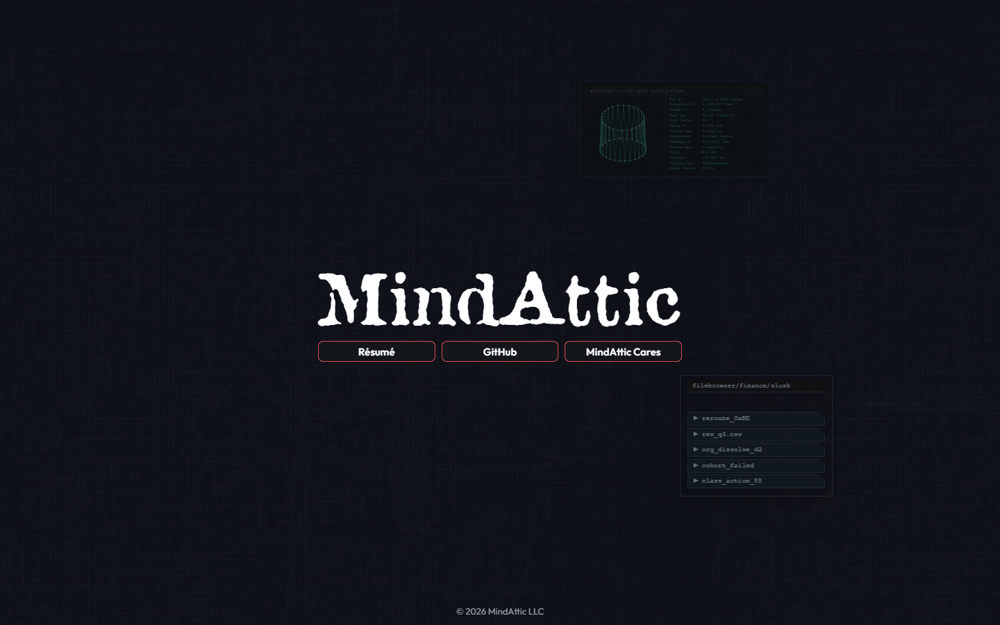
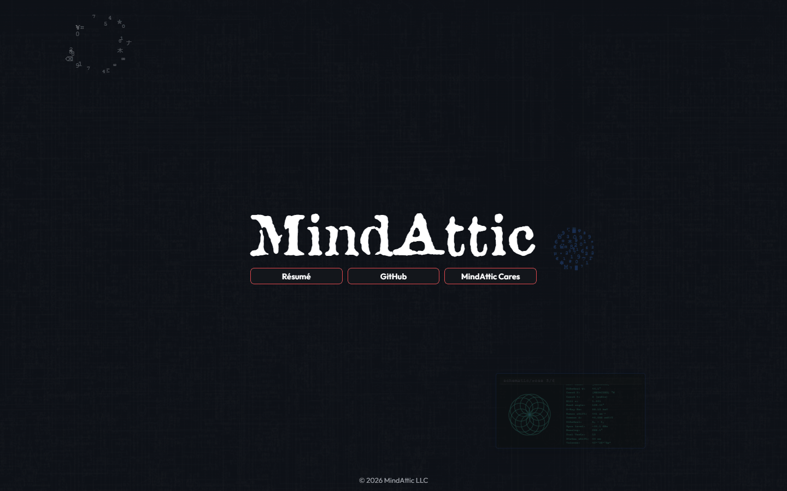

mindattic.com
Ryan DeBraal's front door: one hand-authored HTML page with the MindAttic wordmark, three links and a tap-to-play Cyberspace backdrop, with no build step, no framework and no tracking.

Try it: mindattic.com
Why
- One click from the MindAttic name to the résumé, the GitHub organisation or the charity, with nothing in the way.
- The page is the same shape on every screen. Every length is a multiple of one viewport unit, so a phone and an ultrawide monitor see the same composition.
- View Source is meant to be read. The file opens with an ASCII banner and a numbered table of contents, so it reads like a conversation, not a puzzle.
- Nothing to install and nothing to build. The file you edit is the file the browser runs.
- No analytics, no tracking pixels and no third-party fonts. The only outside host is a tag-pinned CDN copy of MindAttic's own asset package.
Features
| Piece | What it is |
|---|---|
#site-name |
The "MindAttic" wordmark, set in the Attic display font |
.link-row and .link-btn |
Three equal-width buttons: Résumé (https://ryandebraal.com), GitHub (https://github.com/mindattic) and MindAttic Cares (https://mindatticcares.com). Each opens in a new window, which screen readers announce through aria-describedby |
.lockup |
The wordmark and buttons, centred both ways. The three buttons together are exactly as wide as the wordmark |
#site-footer |
Copyright line fixed to the bottom edge. The page never scrolls |
| No selection | Text can't be highlighted (user-select: none), long-press shows no iOS copy bubble and taps don't flash a highlight box. Links and keyboard focus still work |
| Cyberspace block | The backdrop (circuit-board parallax, scanlines, console windows), spliced in by the UiUx sync |
| Tap script | Tap or left-click anywhere off the buttons to spawn one random Cyberspace effect. Right and middle clicks are ignored |
Everything on the page is a multiple of one viewport-relative unit (--u, 1% of the smaller visible viewport side), so it keeps the same shape on every screen and aspect ratio.

The file opens with an ASCII banner and a numbered table of contents, from § 1 to § 12, aimed at anyone who opens View Source (see BIBLE §2 and LAW-7).
The page was radically simplified on 2026-10-02. Read MAC-A6 for what changed and why.
Quick start
You need Python 3 (or any static file server) and a network connection, because fonts, logo, effects engine and textures load from jsDelivr.
git clone https://github.com/mindattic/mindattic.com
cd mindattic.com
python -m http.server 3457
start http://localhost:3457/index.htmYou should see the wordmark and three buttons over the dark Cyberspace backdrop. Tap the background to spawn an effect. The /run Claude Code skill does the same thing.
The page no longer fetches any local data, so serving over HTTP is not strictly required (it used to be, to avoid a CORS-blocked fetch() of data/*.json). Opening index.htm directly works too.
Stack
HTML5, CSS3 (custom properties, dvmin-based sizing, dark "Cyberspace" palette only: the theme toggle was retired, see MAC-A1), one small vanilla JavaScript snippet, and the shared Cyberspace bundle from MindAttic.UiUx.
No React. No Vite. No npm. No analytics, tracking pixels or third-party fonts. The only external host is cdn.jsdelivr.net, serving the MindAttic.UiUx repo (LAW-6, refined by MAC-A6).
Where the assets live
The assets are not in this repo and not in the HTML. Fonts (Outfit, Attic), the logo PNGs, the Cyberspace effects engine and its parallax textures are plain static files in the sibling MindAttic.UiUx repo, served over jsDelivr at a tag-pinned URL:
https://cdn.jsdelivr.net/gh/mindattic/MindAttic.UiUx@V9/<path><head> opens the connection early (preconnect) and preloads the first-paint fonts. The two big engine scripts are deferred so they never block the first paint.
UiUx tags are immutable whole numbers (V7, V8, V9, and so on). The page currently pins V9. To take a newer asset release, change every MindAttic.UiUx@V… in index.htm. The Cyberspace block's tag is set by the sync script's -CyberspaceCdnTag, which defaults to the latest V* tag in the UiUx checkout. Never point the page at @main.
Layout of the package (full rules in MindAttic.UiUx/docs/ASSETS.md):
- Shared fonts at the repo root:
fonts/outfit/,fonts/attic/. - Site-specific files directly under the domain folder as
<domain>/<category>/(this site:mindattic.com/logos/). - Cyberspace textures at
Components/Cyberspace/assets/. - Filenames are lowercase kebab-case.
Project layout
mindattic.com/
├── index.htm # The entire homepage: wordmark, three buttons, backdrop
├── idiotproof/ # Support pages for the IdiotProof sub-project (see below), still deployed
│ ├── privacy-policy.htm # Standalone privacy policy, deployed to /idiotproof/
│ ├── terms-of-use.htm # Standalone terms of use, deployed to /idiotproof/
│ ├── dataset/ # ML feature-store exports (trades.csv, bars.csv, manifest.json)
│ └── replays/ # Generated trade-replay HTML archive: gitignored, deploy-only
├── docs/ # Codex canon: BIBLE, AMENDMENTS, USER_STORIES, rfc/, images/
├── tools/
│ ├── codex.ps1 # doctor (validate docs/) and digest (regenerate BIBLE.digest.md)
│ └── build-readme.ps1 # Thin wrapper -> shared engine in ../codex-standard/build-readme.ps1
├── .claude/ # Slash commands (/deploy, /fetch, /quicksave, /quickload), skills
│ # (/run, /commit, /discard, /revert), hooks (digest injection,
│ # quickload-on-do)
│
│ DORMANT: kept on disk, no longer used by the page (MAC-A6)
├── data/ # software/ecosystem/hardware/books/visual-arts .json (generated)
├── fetch-descriptions.ps1 # Regenerates data/*.json from GitHub repo metadata + Amazon synopses
├── add-book.ps1 / .bat # Appends an Amazon book (cover as base64) to data/books.json
├── diagram/ # ecosystem.mmd (Mermaid) -> render.ps1 -> ecosystem.svg
├── previews/ # <RepoName>.b64 preview images used by fetch-descriptions.ps1
├── .image-base64.txt # Base64 source text for an old inlined image
└── README.md # This filedeploy.ps1, deploy.bat and a per-repo FTP settings.json are retired. Deployment lives in the sibling MindAttic.Deploy repo (see Deployment).
Editing the page
The only region you must not hand-edit is the BEGIN/END MINDATTIC.UIUX:CYBERSPACE block: the next UiUx sync overwrites it (LAW-2).
Change a link or the wordmark
Edit the three <a class="link-btn"> anchors (or the <h1 id="site-name">) near the end of index.htm. Keep target="_blank" rel="noopener noreferrer" on the links. The layout adapts on its own: the buttons are equal width and span exactly the wordmark's width.
Take a new asset release
- Add or change the file in
MindAttic.UiUx, tag the next whole-number release and push the tag. - Change every
MindAttic.UiUx@V…inindex.htmto the new tag (or run the UiUx sync with-CyberspaceCdnTag V<n>for the Cyberspace block, and update the font and logo URLs by hand). - Confirm the new URLs resolve (
curl -Ithem) before deploying.
The linked deploy does all three steps for you (see Deployment).
Cyberspace, the only synced component
It is not run on its own from this repo. It happens as step 3 of a deploy, through MindAttic.UiUx/sync/sync-mindattic-com.ps1, which rewrites only the CYBERSPACE marker block. This site is no longer enrolled for the OutfitFont, AtticFont, PinFooter or WebSnapshot components: the fonts load straight from the CDN.
Dormant generators
These still run, but their output (data/*.json, the ecosystem SVG) is not shown anywhere any more:
powershell -NoProfile -ExecutionPolicy Bypass -File "D:\Projects\MindAttic\mindattic.com\fetch-descriptions.ps1"
powershell -File add-book.ps1 https://www.amazon.com/dp/B0XXXXXXXX
powershell -File diagram\render.ps1 # WILL THROW: the ECOSYSTEM-DIAGRAM markers are no longer in index.htmfetch-descriptions.ps1rebuildsdata/software.json,ecosystem.jsonandhardware.jsonfrom every publicmindatticGitHub repo. Visibility is the only gate; thehardwaretopic and theMindAttic.*prefix only pick the section (MAC-A4). It also refreshesdata/books.jsonsynopses from Amazon, and has-ListUntaggedand-ProposeDescriptions/-ApplyDescriptions(README-derived description write-back throughgh repo edit, human-approved first). It requires theghCLI and does nothing ifghis missing. It never writesindex.htm.add-book.ps1appends an Amazon book (cropped cover as a base64 data URL, deduplicated by ASIN) todata/books.json.- Whether to delete this machinery is an open decision (MAC-US-D5).
The idiotproof folder
IdiotProof is one of the MindAttic.* ecosystem software projects: a tool that connects to a brokerage account (Alpaca) to author and evaluate trading strategies and, optionally, place orders. Its project page is its GitHub README. The old catalog landing page (mindattic.com/idiotproof.htm) was retired (MindAttic.Deploy DEP-A6).
What does live in this repo, under idiotproof/, is the small set of static support pages that ship to /idiotproof/ on the same domain:
| Path | What it is | Tracked in git |
|---|---|---|
idiotproof/privacy-policy.htm |
Standalone privacy policy page | Yes |
idiotproof/terms-of-use.htm |
Standalone terms-of-use page | Yes |
idiotproof/dataset/manifest.json, trades.csv, bars.csv |
Exported ML feature-store data (one row per round-trip trade, one row per minute bar), generated by IdiotProof's own SQL export and checked in | Yes |
idiotproof/replays/** |
A generated archive of trade-strategy replays (an index.htm per ticker plus one per replay run), grouped by trading day |
No: gitignored, it exists only to be uploaded |
These are plain static files with their own inline <style> and <script>. They are uploaded by the idiotproof-replays site entry in MindAttic.Deploy/projects.json (uploadDir), separately from index.htm.
Deployment
Use the /deploy Claude Code slash command, or run:
cd D:\Projects\MindAttic\MindAttic.Deploy
npm run deploy -- --site mindattic.comThe pipeline is owned entirely by the sibling MindAttic.Deploy repo. This repo's own deploy.ps1, deploy.bat and FTP settings.json are retired (MAC-A2).
It is a linked 4-in-1 deploy: deploying this site also publishes MindAttic.UiUx and deploys ryandebraal.com and mindatticcares.com (see MindAttic.Deploy/README.md, "Linked deploy"):
- Preflight:
MindAttic.UiUxmust be clean, onmain, not behind origin, with a current manifest. - Publishes the next
MindAttic.UiUxtag (V<n>) if itsHEADis ahead of the latest tag. - Pins that tag in each site's
index.htmand runssync-mindattic-com.ps1to splice the Cyberspace block. - Verifies every asset the sites use is live on jsDelivr, byte-exact, before anything is uploaded.
- Stamps the
Last Updatedcomment at the top ofindex.htmand FTPS-uploads it to/mindattic.com/.
Only index.htm is uploaded. The fonts, logo, engine and textures are already on the CDN (they ship when the MindAttic.UiUx tag is pushed), and data/*.json is no longer needed on the server (MAC-A6 supersedes MAC-A3).
This site's deploy profile lives in MindAttic.Deploy/projects.json under sites[]. The old per-project landing pages (mindattic.com/<slug>.htm, for example idiotproof.htm) and the catalog mode that built them were retired (MindAttic.Deploy DEP-A6): each repo's GitHub README is now its project page. FTP credentials are centralised in MindAttic.Deploy (gitignored there); this repo no longer reads its own settings.json for that.
A PostToolUse hook in .claude/settings.json also stamps the Last Updated comment locally on every Edit or Write of index.htm, independent of a deploy.
Conventions
- Asset URLs:
https://cdn.jsdelivr.net/gh/mindattic/MindAttic.UiUx@V<n>/<path>, tag-pinned, whole-number tags, never@main. - Asset layout in
MindAttic.UiUx: shared fonts at the root (fonts/<family>/), per-site files at<domain>/<category>/(noassets/level), kebab-case filenames, variant last (m-monogram-transparent.png). - Page CSS: IDs for singletons (
#content,#site-name,#site-footer); classes for reusable pieces (.lockup,.link-row,.link-btn); sizing chain--uto--wmto--btn-u; lengths inremordvmin, or multiples of those variables.
The full list is BIBLE §10.
Testing
There is no compiler, unit-test suite or CI in this repo: it is a static HTML page with dormant PowerShell generators. "Verified" here means the file loads as HTML, the page's markup is present as documented, and codex doctor passes clean. The shared Playwright suite in MindAttic.UiUx/tests covers the linked sites.
powershell -NoProfile -ExecutionPolicy Bypass -File tools\codex.ps1 doctor # validate docs/
powershell -NoProfile -ExecutionPolicy Bypass -File tools\codex.ps1 digest # regenerate the digest
powershell -NoProfile -ExecutionPolicy Bypass -File tools\build-readme.ps1 # regenerate README.htmDocumentation
This repo follows the MindAttic Codex documentation standard (project code MAC). A fact lives in exactly one layer:
| Layer | File | What it holds |
|---|---|---|
| L0 | docs/BIBLE.md | What the site is and is not, architecture, the Laws (MAC-LAW-n), verified state, glossary, conventions |
| L1 | docs/AMENDMENTS.md | Append-only change log (MAC-A<n>); an amendment wins over the bible |
| L2 | docs/USER_STORIES.md |
Stories MAC-US-<Epic><n>; every done story cites its evidence |
| rfc | docs/rfc | Design notes (for example 0001-codex-adoption.md) that graduate into the layers above |
| generated | docs/BIBLE.digest.md | Produced by tools/codex.ps1 digest; never hand-edited |
Agent instructions: AGENTS.md is this project's agent entrypoint. CLAUDE.md is a provider forwarder to the workspace-wide MindAttic agent standard.
License
This repo has no LICENSE file. All rights reserved.
Part of MindAttic — see more projects at github.com/mindattic. Related: ryandebraal.com, mindatticcares.com, MindAttic.UiUx, MindAttic.Deploy.